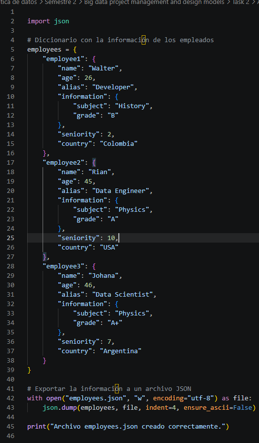
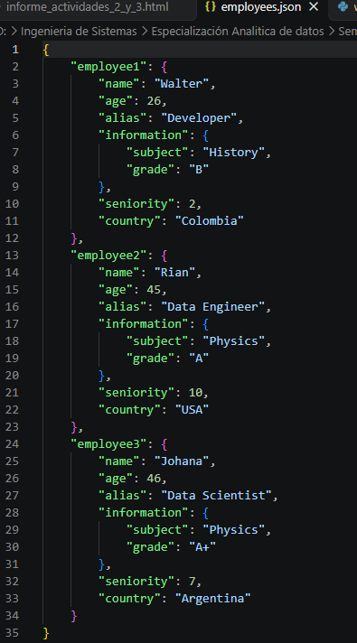
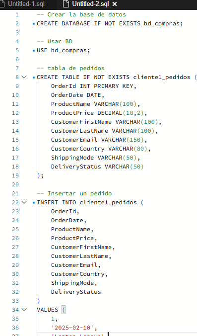
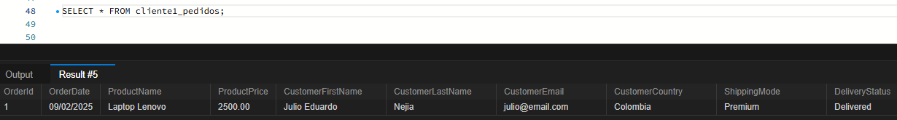
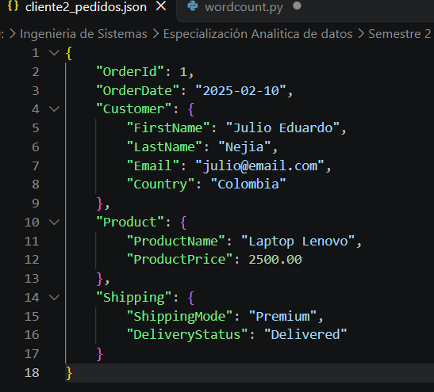
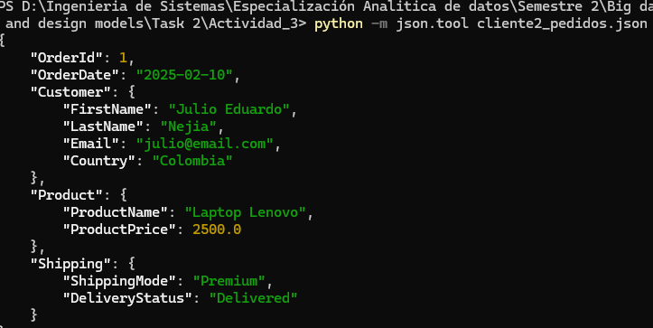

Report on the Development of Activities 2 and 3
Introduction
This report presents the development of activities related to data representation, storage, and organization using Python, JSON, and MySQL. In Activity 2, a Python dictionary containing information about three employees was created and exported to a JSON file. In Activity 3, a relational database was implemented in MySQL to store an order. Additionally, a JSON document with nested information about a customer, a product, and its shipment was created.
Activity 2. NoSQL Fundamentals Using Python and JSON
Objective
Build a data structure using Python dictionaries to store information about three employees, add the seniority and country fields, and export the records to a file named employees.json.
Development
The employees.py program was created using the standard json library. The main structure, named employees, contains three records. Each record groups the employee attributes and an internal information object containing the subject and grade.
| Name | Age | Alias | Subject | Grade | Seniority (years) | Country |
|---|---|---|---|---|---|---|
| Walter | 26 | Developer | History | B | 2 | Colombia |
| Rian | 45 | Data Engineer | Physics | A | 10 | USA |
| Johana | 46 | Data Scientist | Physics | A+ | 7 | Argentina |
Exporting to JSON
The json.dump() function was used to generate the file. It serializes the Python structure and writes it to a JSON document. The indent=4 parameter displays the data with indentation, while ensure_ascii=False preserves special characters. The resulting file was named employees.json.
employees.json file with the three employees and the requested fields.

Nota. Elaboración propia.

Nota. Elaboración propia.
Activity 3. Implementation of SQL and NoSQL Databases
Objective
Implement two storage approaches: a relational database using MySQL and a JSON document with nested objects to represent order information.
Part A. SQL Database Using MySQL
The bd_compras database was created in MySQL Workbench, along with the cliente1_pedidos table. The table contains the following fields: OrderId, OrderDate, ProductName, ProductPrice, CustomerFirstName, CustomerLastName, CustomerEmail, CustomerCountry, ShippingMode, and DeliveryStatus.
A sample record was inserted with ID 1, date February 10, 2025, product Laptop Lenovo, price 2500.00, customer Julio Eduardo Nejia, email julio@email.com, country Colombia, Premium shipping mode, and Delivered status. The query SELECT * FROM cliente1_pedidos; was used to review the stored record.

Nota. Elaboración propia.

Nota. Elaboración propia.
Part B. NoSQL Document Using JSON
The cliente2_pedidos.json file was created to represent order ID 55. The document is organized into three nested objects: Customer, which contains Ana Torres’s details and her country (Chile); Product, which records a Samsung Smartwatch priced at 899.99 with availability set to Available; and Shipping, which includes the Node Express shipping method, an estimated delivery time of three days, In transit status, and Low delay risk.
The document syntax was checked in PowerShell using the command python -m json.tool cliente2_pedidos.json. The tool displayed the content correctly formatted without reporting syntax errors.

Nota. Elaboración propia.

Nota. Elaboración propia.
Comparative Analysis
The exercise made it possible to identify that the SQL relational model organizes data into tables with defined columns and records, making structured queries easier to perform. In contrast, JSON documents allow related information to be grouped into nested objects and represent flexible structures. The choice between these approaches depends on the application requirements and on how the information needs to be queried and managed.
Conclusions
The development of this activity made it possible to apply Python data structures, generate JSON documents, and perform basic creation, insertion, and query operations in MySQL. Differences between relational storage and document-based representation were also identified, showing that both approaches offer useful ways to organize information according to the needs of each technological solution.
References
Python Software Foundation. (n.d.). json — JSON encoder and decoder. https://docs.python.org/3/library/json.html
Oracle. (n.d.). MySQL 8.4 Reference Manual. https://dev.mysql.com/doc/refman/8.4/en/